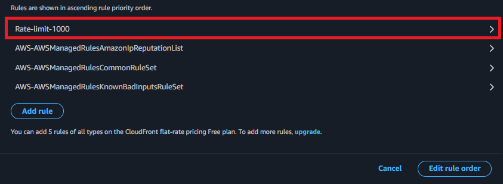
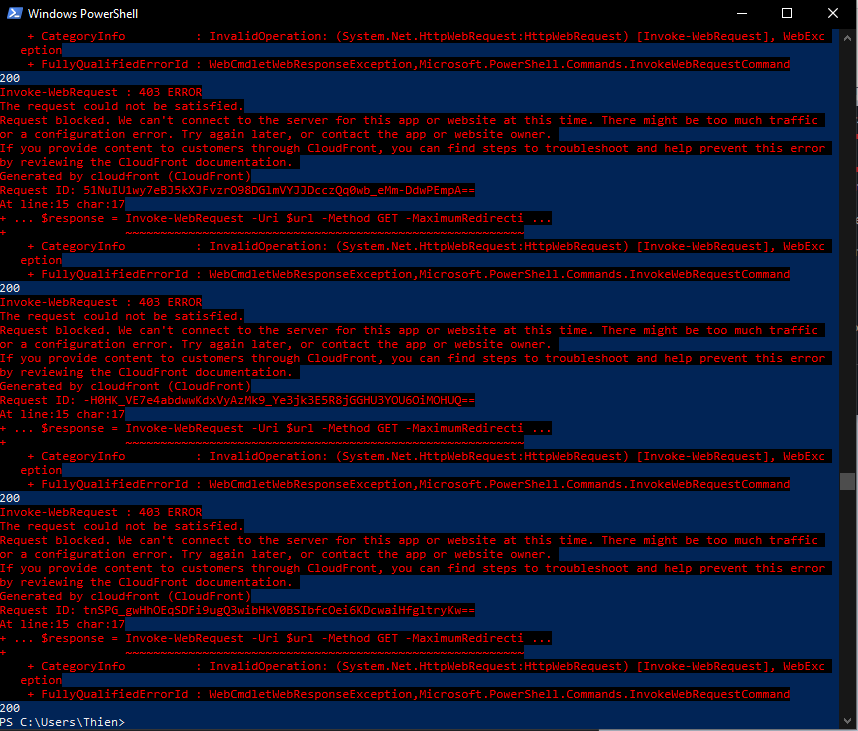
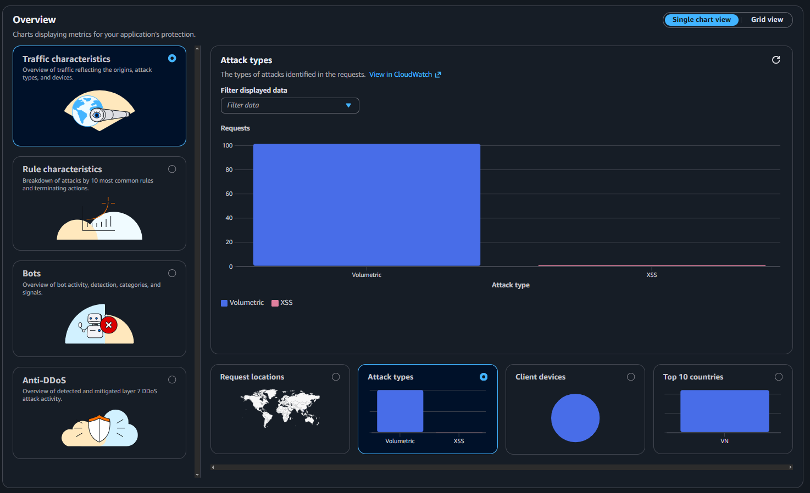
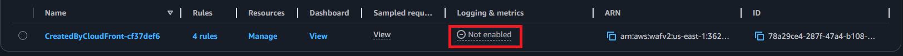
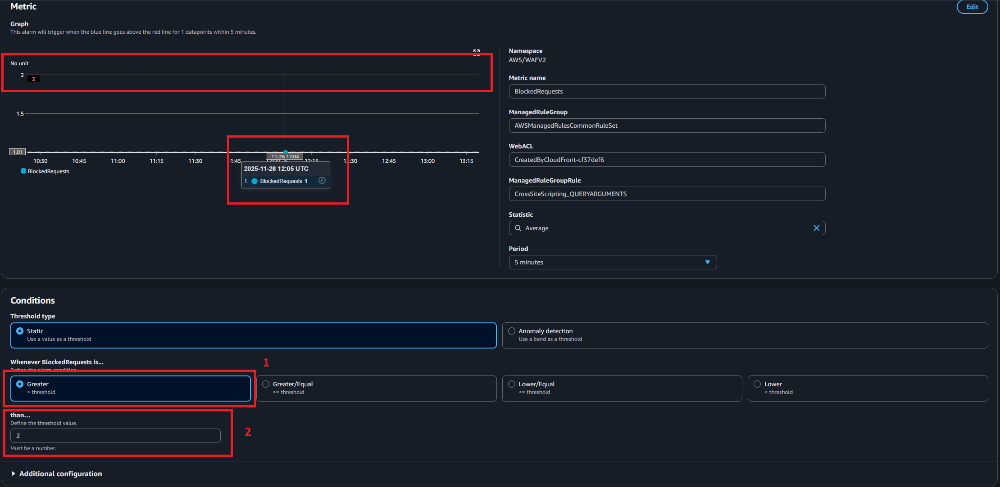

AWS WAF Configuration
Overview
In this section, you’ll configure AWS WAF (Web Application Firewall) to protect your CloudFront distribution from common web exploits and malicious traffic. WAF provides a layer of security that inspects incoming requests and blocks those that match defined rules.
What you’ll accomplish:
- Understand AWS WAF concepts and rule types
- View and understand WAF included with your CloudFront distribution
- Test and verify WAF protection
- Monitor blocked requests
Estimated time: 45 minutes
Why AWS WAF?
Protection against:
- SQL injection attacks: Prevents database compromise
- Cross-site scripting (XSS): Blocks malicious script injection
- Bot traffic: Filters automated requests and scrapers
- DDoS attacks: Rate limiting to prevent resource exhaustion
- Geographic restrictions: Block/allow traffic from specific countries
- Known bad inputs: Protects against common attack patterns
Benefits:
- Real-time protection at the edge (CloudFront)
- Highly customizable rules
- Detailed logging and monitoring
- Pay only for what you use
- No infrastructure to manage
Costs Considerations
Free-tier:
- $0/month
Paid-tier
| Resource Type | Price |
|---|---|
| Web ACL | $5.00 per month (prorated hourly) |
| Rule | $1.00 per month (prorated hourly) |
| Request | $0.60 per 1 million requests |
- Overall: $0 or < $1 if Paid-tier (assume immediate clean up after workshop)
Understanding WAF Concepts
Web ACL (Access Control List)
A Web ACL is the core resource that contains all your security rules. It’s associated with your CloudFront distribution to inspect and filter traffic.
Rule Types
1. Managed Rules
- Pre-configured rule sets maintained by AWS or AWS Marketplace sellers
- Regularly updated for new threats
- Easy to implement (no configuration needed)
2. Custom Rules
- Rules you create for specific requirements
- Full control over match conditions and actions
- Useful for application-specific protection
3. Rule Groups
- Collections of related rules
- Can be managed rules or custom rule groups
- Evaluated in priority order
Rule Actions
- Allow: Request passes through
- Block: Request is blocked (returns 403 Forbidden)
- Count: Request is counted but allowed (useful for testing)
- CAPTCHA: Presents a CAPTCHA challenge
- Challenge: Presents a silent browser challenge
Rule Capacity Units (WCU)
- Each rule consumes a certain number of WCUs
- Maximum 1,500 WCUs per Web ACL
- Simple rules: 1-5 WCUs
- Complex managed rules: 50-100+ WCUs
Step 1: Navigate to AWS WAF Console
1.1 Access WAF Service
- In the AWS Console search bar, type “WAF”
- Click on WAF & Shield under Services

1.2 Understand the Dashboard
You’ll see:
- Web ACLs: Your firewall configurations
- IP sets: Reusable IP address lists
- Regex pattern sets: Reusable regex patterns
- Rule groups: Custom rule collections
- Application integration
- Add-on protection
Step 2: View a Web ACL
2.1 View the Web ACL created by CloudFront
- In the left navigation, click Protection packs (web ACLs)
- You can see a Web ACL created by CloudFront that you set up in Cloudfront Distribution Setup

This WAF configuration is included as part of the CloudFront pricing Free plan for the distribution we created in Cloudfront Distribution Setup
- Click the Web ACL name to open a sidebar to view actions
- You can view which CloudFront distribution created the Web ACL in the sidebar

- Click Manage details, here we can see the properties and behavior of this protection pack
- Click Download protection pack (web ACL) as JSON. Then open it to see the web ACL
- You can view the sample Web ACL JSON and explanation in this section
- Under Protection pack (web ACL) behavior, you can modify Default action, if set to allow, allow all requests that are not caught by web ACL rules, and vice versa
- Under Challenge configurations is for adjusting challenges (CAPTCHA) behaviors like default immunity time (time before having to solve next CAPTCHA) or token domains (for persisting challenge immunity between domains)
- Custom response: customize what is returned in the response when requests are blocked

- Back to the main page, click Manage rules
- On this page, you can see existing rules which was created along with CloudFront

- Click on a rule to manage:
- Inspection: apply rule to All requests or requests that Match statement
- All requests: the Override rule groups checkbox if checked, the entire rule group will primarily operate in Count mode. Rules that in Block mode will stop blocking, instead, they only count requests that match criteria
- Match statement: define criteria to block requests, such as IP block or Geo-block
- Click the Add rule button to add a rule
- You can choose between Custom rule and AWS Managed rule groups
- In custom rule, you can create criteria such as IP-based rule (IP block), Geo-based rule (Location block), Rate-based rule (Rate limiting) and Custom rule (combining with logical operators)
- For example, let’s create a Rate-based rule, if there are more than 1000 requests within 5 minutes, block all subsequent requests after the 1000th


- Click the Edit rule order to modify order of rules
- Higher rules will block all requests without them to access lower rules
- Let’s modify our new Rate-based rule to be the highest
- Drag the new rule to the top, then click Save rule order
- We will test this rule in the next step (Step 3)

-
Back to the main page, click Manage resources
- On this section, we can modify which AWS resources for this web ACL to protect. Free-tier CloudFront associated web ACL can not be assigned to other resources or un-assigned from its designated CloudFront distribution
-
We will cover View dashboard, logs and sampled requests and Configure logging and sampled requests sections later
Step 3: Test WAF Protection
3.1 Test Normal Access
- Open your website:
https://[your-cloudfront-domain].cloudfront.net - Navigate through different pages
- Verify the site works normally
Expected result: Site loads without issues
3.2 Test SQL Injection Protection
Try accessing your site with a SQL injection pattern in the URL:
https://[your-cloudfront-domain].cloudfront.net/?id=1' OR '1'='1
Expected result:
- 403 Forbidden error
- Request blocked by WAF

3.3 Test XSS Protection
Try accessing with a cross-site scripting pattern:
https://[your-cloudfront-domain].cloudfront.net/?search=<script>alert('xss')</script>
Expected result:
- 403 Forbidden error
- Request blocked by WAF
3.4 Test Rate Limiting
You can test rate limiting rule we created earlier with a simple script or tool:
Using curl (bash/terminal):
$url = "https://d3b2qa4f4hqtdb.cloudfront.net/"
$count = 1100
# Loop from 1 to 1100
for ($i = 1; $i -le $count; $i++) {
# Invoke-WebRequest sends the request
# -Uri specifies the URL
$response = Invoke-WebRequest -Uri $url -Method GET -MaximumRedirection 0 -TimeoutSec 10 -ErrorAction SilentlyContinue | Select-Object -First 1
# Check if a response object was returned
if ($response -ne $null) {
# Output the HTTP Status Code
$response.StatusCode
} else {
# Output a message if the request failed
"Request failed or timed out"
}
}
Expected result:
- First ~1,000 requests: HTTP 200
- After 1,000 requests: HTTP 403
- Rate limit triggered

Testing Rate Limits:
The rate limit counts requests over a 5-minute window. After being blocked, wait 5 minutes for the counter to reset. In production, set appropriate limits based on your expected traffic patterns:
Public websites: 2,000-10,000 requests per 5 minutes
APIs: 100-1,000 requests per 5 minutes (depends on use case)
Admin panels: 50-100 requests per 5 minutes
3.5 Alternative: Use Browser Developer Tools
For simpler testing without scripts:
- Open Developer Tools (F12)
- Go to Network tab
- Rapidly refresh the page multiple times (Hold Ctrl+R or Cmd+R)
- After 2,000+ requests, you should see 403 responses
Step 8: Monitor WAF Activity
8.1 View Web ACL Overview
- Go to AWS WAF -> Protection packs (web ACLs)
- Click on View under the Dashboard column
- Or you can click the Web ACL name and in the sidebar, click View dashboard, logs and sampled requests
- You’ll see the Dashboard
Metrics shown:
- Total: total requests received
- Allowed requests: Requests that passed all rules
- Blocked requests: Requests blocked by rules
- CAPTCHA: Requests that were matched by a rule and presented with a visual or audio puzzle requiring human interaction to solve.
- Challenged: Requests that were matched by a rule and subjected to a silent browser interrogation

8.2 Analyze Protection pack (web ACL) activity
- Scroll down to Protection pack (web ACL) activity section
- You’ll see a graph displaying requests handled by each rule. Hover on each section to see detailed count of allowed, blocked… requests of each rule

8.3 Analyze overview
- Scroll down to the bottom, you can see charts, you can select criteria to filter data for the chart such as:
- Request locations
- Type of attacks
- Client devices
- Rules characteristics…
Useful for:
- Identifying attack patterns
- Understanding traffic trends
- Setting up alarms for unusual activity

Step 9: Create CloudWatch Alarms (Optional)
To follow this section, you must upgrade your CloudFront to Pro-tier. You will be charged $15/month in Pro-tier and you can only switch back to free-tier after 5 days. Furthermore, you can only delete your Pro-tier distribution after the first billing cycle
9.1 Enable logging destination in WAF
- Go to WAF console -> Protection packs (web ACLs)
- In your web ACL, under Logging & metrics, you should see that it is Not enabled, click on Not enabled -> Configure to configure logging

- On the next screen, under Logging, click Enable, then select Logging destination
- On the sidebar that appeared, under Amazon Cloudwatch Logs log group, you can use existing log groups and create a new one. We will create and use a log group called
aws-waf-logs-workshop1, then click Create
- Back to Logging destination sidebar, select you newly-created log groups
- Then click Save

9.1 Set Up Blocked Request Alarm
- Go to CloudWatch console
- Click Alarms -> All alarms in the left navigation
- Click Create alarm
Configure alarm:
Select metric:
- Click Select metric
- You should see WAFV2 in the list, click on it to show list of metrics

- Select any metrics you want to create an alarm for. I will create one for XSS Blocked attacks: click ManagedRuleGroup, ManagedRuleGroupRule, WebACL, then select AWSManagedRulesCommonRuleSet, then click Select metric

- Click Select metric
Specify conditions:
- Statistic: Sum
- Period: 5 minutes
- Threshold type: Static
- Whenever BlockedRequests is: Greater than
2 - This triggers when more than 2 requests are blocked in 5 minutes 
Configure actions:
- Choose to create In alarm
- Click Create new topic (for SNS notification)
- Topic name:
Default_CloudWatch_Alarms_Topic - Email: Enter your email address
- Click Create topic

- You will now see you topic selected
- Click Next
Alarm name:
- Name:
WAF-High-Blocked-Requests - Description:
Alert when WAF blocks more than 100 requests in 5 minutes
- Click Create alarm
9.2 Confirm SNS Subscription
- Check your email
- Click the confirmation link in the SNS subscription email
- You’ll start receiving alerts when the alarm triggers

9.3 Test alarm
Now let’s simulate a XSS attack 2 more times to trigger the alarm
Try accessing with a cross-site scripting pattern:
https://[your-cloudfront-domain].cloudfront.net/?search=<script>alert('xss')</script>
Step 10: Fine-Tune Rules (Optional)
10.1 Handle False Positives
If legitimate requests are being blocked:
- Go to WAF console
- Click on your Web ACL
- Click Rules tab
- Find the rule causing false positives (check sampled requests)
Options:
Option 1: Set rule to Count mode
- Click Edit on the rule group
- Click Override all rule actions
- Select Count
- This logs matches without blocking (testing mode)
Option 2: Exclude specific rules
- Click Edit on the rule group
- Expand Rules
- Find the problematic rule
- Select Override to Count for that specific rule
Option 3: Add scope-down statement
- Click Edit on the rule group
- Add conditions to narrow when the rule applies
- Example: Only apply to specific paths or query parameters
Troubleshooting
Issue: Legitimate requests being blocked (False Positives)
Solution:
- Check sampled requests to identify which rule is blocking
- Set that specific rule to Count mode temporarily
- Add scope-down statements to narrow rule application
- Or exclude specific sub-rules causing issues
Issue: WAF not blocking test attacks
Causes:
- WAF still deploying to edge locations (wait 5 minutes)
- Rule priority incorrect
- Rule set to Count instead of Block
Solution:
- Verify Web ACL status is Active
- Check rule actions are set to Block
- Verify CloudFront association is complete
- Check rule priority order
- Clear CloudFront cache and test again
Issue: Cannot see Web ACL in CloudFront
Solution:
- Ensure you created WAF in Global (CloudFront) region
- Regional WAF (for ALB/API Gateway) won’t appear for CloudFront
- Recreate Web ACL in correct region if needed
Issue: Rate limit not working
Solution:
- Verify rate limit rule is enabled and priority is correct
- Check you’re testing from same IP (different IPs have separate counters)
- Remember rate limit is per 5-minute window
- Test with enough requests (e.g., 2,100+ for 2,000 limit)
Issue: High WAF costs
Solution:
- Review which managed rules you actually need
- Consider using fewer rule groups
- Use custom rules instead of multiple managed rules where possible
- Remove Web ACL when not actively using
Summary
Congratulations! You’ve successfully:
- Created an AWS WAF Web ACL
- Configured AWS managed rule groups for protection
- Set up custom rate limiting rules
- Associated WAF with CloudFront
- Tested and verified WAF protection
- Learned to monitor and troubleshoot WAF activity
- (Optional) Set up logging and CloudWatch alarms
What You’ve Achieved
Your application is now protected against:
- SQL injection attacks: Database exploitation attempts blocked
- Cross-site scripting (XSS): Malicious script injection prevented
- Known bad inputs: Invalid and malicious patterns filtered
- Rate-based attacks: Automated abuse and DDoS mitigated
- IP reputation threats: Known malicious IPs blocked
Complete Architecture
Internet Users
↓
AWS WAF (Security Rules)
↓
CloudFront (HTTPS + Caching)
↓
S3 Bucket (Private, Static Content)
Security Layers Now in Place
- Network Layer: CloudFront with DDoS protection (AWS Shield Standard)
- Application Layer: AWS WAF with managed rules and rate limiting
- Transport Layer: HTTPS encryption with SSL/TLS
- Storage Layer: Private S3 bucket with OAC
Best Practices Summary
For Production:
- Start with managed rule groups for baseline protection
- Use Count mode to test rules before blocking
- Monitor sampled requests regularly for false positives
- Set up CloudWatch alarms for unusual activity
- Enable logging for audit and compliance
- Review and update rules based on traffic patterns
- Use IP sets for dynamic allow/block lists
- Implement appropriate rate limits for your use case
- Document rule changes and exceptions
Security Monitoring:
- Check WAF dashboard weekly
- Review blocked requests for attack patterns
- Investigate spikes in blocked traffic
- Update rules as new threats emerge
- Keep managed rules enabled for auto-updates
Next Steps
You’ve completed the frontend deployment! Your static website is now:
- Globally distributed with CloudFront
- Protected by AWS WAF
- Served over HTTPS
- Secured with private S3 access
Proceed to Workshop 2 to build the backend:
- API Gateway for RESTful APIs
- Lambda functions for business logic
- RDS for database storage
- Cognito for user authentication
- Secrets Manager for credentials
Useful Commands:
# Get Web ACL details
aws wafv2 get-web-acl \
--scope CLOUDFRONT \
--id YOUR-WEBACL-ID \
--name workshop-frontend-waf
# List Web ACLs
aws wafv2 list-web-acls \
--scope CLOUDFRONT
# Get sampled requests
aws wafv2 get-sampled-requests \
--web-acl-arn YOUR-WEBACL-ARN \
--rule-metric-name RateLimitRule \
--scope CLOUDFRONT \
--time-window StartTime=1234567890,EndTime=1234567900 \
--max-items 100
# Update rule action to Count (testing)
aws wafv2 update-web-acl \
--scope CLOUDFRONT \
--id YOUR-WEBACL-ID \
--name workshop-frontend-waf \
--default-action Allow={} \
# ... (additional parameters)
WAF Dashboard URLs:
- Web ACL Overview:
https://console.aws.amazon.com/wafv2/homev2/web-acl/workshop-frontend-waf/ - CloudWatch Metrics:
https://console.aws.amazon.com/cloudwatch/home?region=us-east-1#metricsV2:query=~(metricName~'BlockedRequests)
Congratulations! You’ve successfully deployed and secured a production-ready serverless frontend application on AWS! 🎉
Understanding Web ACL JSON
{
"ARN": "arn:aws:wafv2:us-east-1:362324939369:global/webacl/CreatedByCloudFront-cf37def6/78a29ce4-287f-47a4-b108-886bfc3ae748",
"Capacity": 925,
"DefaultAction": {
"Allow": {}
},
"Description": "",
"Id": "78a29ce4-287f-47a4-b108-886bfc3ae748",
"LabelNamespace": "awswaf:362324939369:webacl:CreatedByCloudFront-cf37def6:",
"ManagedByFirewallManager": false,
"Name": "CreatedByCloudFront-cf37def6",
"OnSourceDDoSProtectionConfig": {
"ALBLowReputationMode": "ACTIVE_UNDER_DDOS"
},
"RetrofittedByFirewallManager": false,
"Rules": [
{
"Name": "AWS-AWSManagedRulesAmazonIpReputationList",
"OverrideAction": {
"None": {}
},
"Priority": 0,
"Statement": {
"ManagedRuleGroupStatement": {
"Name": "AWSManagedRulesAmazonIpReputationList",
"VendorName": "AWS"
}
},
"VisibilityConfig": {
"CloudWatchMetricsEnabled": true,
"MetricName": "AWS-AWSManagedRulesAmazonIpReputationList",
"SampledRequestsEnabled": true
}
},
{
"Name": "AWS-AWSManagedRulesCommonRuleSet",
"OverrideAction": {
"None": {}
},
"Priority": 1,
"Statement": {
"ManagedRuleGroupStatement": {
"Name": "AWSManagedRulesCommonRuleSet",
"VendorName": "AWS"
}
},
"VisibilityConfig": {
"CloudWatchMetricsEnabled": true,
"MetricName": "AWS-AWSManagedRulesCommonRuleSet",
"SampledRequestsEnabled": true
}
},
{
"Name": "AWS-AWSManagedRulesKnownBadInputsRuleSet",
"OverrideAction": {
"None": {}
},
"Priority": 2,
"Statement": {
"ManagedRuleGroupStatement": {
"Name": "AWSManagedRulesKnownBadInputsRuleSet",
"VendorName": "AWS"
}
},
"VisibilityConfig": {
"CloudWatchMetricsEnabled": true,
"MetricName": "AWS-AWSManagedRulesKnownBadInputsRuleSet",
"SampledRequestsEnabled": true
}
}
],
"VisibilityConfig": {
"CloudWatchMetricsEnabled": true,
"MetricName": "CreatedByCloudFront-cf37def6",
"SampledRequestsEnabled": true
}
}
ARN (Amazon Resource Name)
"ARN": "arn:aws:wafv2:us-east-1:362324939369:global/webacl/CreatedByCloudFront-cf37def6/78a29ce4-287f-47a4-b108-886bfc3ae748"
What it is: A unique identifier for your Web ACL across all of AWS.
Breaking down the ARN:
wafv2: Service (AWS WAF version 2)us-east-1: Region where metadata is stored (all CloudFront WAF uses us-east-1)362324939369: Your AWS Account IDglobal: Scope (CloudFront resources are global)webacl: Resource typeCreatedByCloudFront-cf37def6: Web ACL name78a29ce4-287f-47a4-b108-886bfc3ae748: Unique Web ACL ID
Capacity
"Capacity": 925
What it means: This Web ACL is using 925 out of the maximum 1,500 Web ACL Capacity Units (WCUs).
Capacity breakdown:
- Amazon IP Reputation List: ~25 WCUs
- Common Rule Set: ~700 WCUs
- Known Bad Inputs: ~200 WCUs
- Total: 925 WCUs
- Remaining capacity: 575 WCUs (you can add more rules)
About WCU Capacity:
Each rule and managed rule group consumes WCUs based on its complexity. The 1,500 WCU limit ensures optimal performance. If you need more capacity, you can:
Remove unused rules
Create multiple Web ACLs for different distributions
Use custom rule groups to optimize capacity usage
Default Action
"DefaultAction": {
"Allow": {}
}
What it means: Requests that don’t match any rules are allowed by default.
This is the recommended approach because:
- Rules explicitly block malicious traffic
- Legitimate traffic passes through by default
- Reduces risk of blocking valid users
Alternative: Setting default action to “Block” would require explicit Allow rules for all legitimate traffic (not recommended for most use cases).
ID and Name
"Id": "78a29ce4-287f-47a4-b108-886bfc3ae748",
"Name": "CreatedByCloudFront-cf37def6"
- ID: Unique identifier used in API calls
- Name: Human-readable name (auto-generated if created via CloudFront console)
Label Namespace
"LabelNamespace": "awswaf:362324939369:webacl:CreatedByCloudFront-cf37def6:"
What it is: A prefix for labels applied by rules in this Web ACL.
Labels are tags that rules can add to requests. Other rules can then match on these labels for advanced logic. For example:
- One rule labels a request as “suspicious”
- Another rule blocks all “suspicious” labeled requests
Firewall Manager Settings
"ManagedByFirewallManager": false,
"RetrofittedByFirewallManager": false
What it means: This Web ACL is not managed by AWS Firewall Manager.
AWS Firewall Manager is a service for centrally managing security policies across multiple AWS accounts. Since these are false:
- You have full control to modify this Web ACL
- Changes won’t be overridden by organizational policies
- You’re managing security at the individual account level
DDoS Protection Configuration
"OnSourceDDoSProtectionConfig": {
"ALBLowReputationMode": "ACTIVE_UNDER_DDOS"
}
What it is: Configuration for how WAF handles traffic from low-reputation sources during DDoS attacks.
ACTIVE_UNDER_DDOS mode:
- During normal operations: All traffic processed normally
- During active DDoS attack: WAF applies additional scrutiny to requests from IPs with low reputation scores
- This provides an extra layer of protection when your application is under attack
About AWS Shield:
This configuration works in conjunction with AWS Shield Standard, which is automatically included with CloudFront at no extra cost. Shield Standard provides:
DDoS protection at network and transport layers
Automatic detection and mitigation
Always-on protection
For enhanced protection, you can upgrade to AWS Shield Advanced (additional cost).
Rules Configuration
Your Web ACL contains 3 managed rule groups, evaluated in priority order (0 → 1 → 2).
Rule 1: Amazon IP Reputation List (Priority 0)
{
"Name": "AWS-AWSManagedRulesAmazonIpReputationList",
"Priority": 0,
"Statement": {
"ManagedRuleGroupStatement": {
"Name": "AWSManagedRulesAmazonIpReputationList",
"VendorName": "AWS"
}
},
"OverrideAction": {
"None": {}
},
"VisibilityConfig": {
"CloudWatchMetricsEnabled": true,
"MetricName": "AWS-AWSManagedRulesAmazonIpReputationList",
"SampledRequestsEnabled": true
}
}
What it does:
- Blocks requests from IP addresses known for malicious activity
- AWS maintains a constantly updated list of bad IPs based on threat intelligence
- Includes IPs associated with:
- Botnets
- Spam campaigns
- Malware distribution
- DDoS attacks
Priority 0: Evaluated first - if a request comes from a known bad IP, it’s blocked immediately without checking other rules.
OverrideAction: None:
- Uses the default action defined in the managed rule group (Block)
- No overrides applied
- All rules within this group remain active
VisibilityConfig:
- CloudWatchMetricsEnabled: true - Metrics sent to CloudWatch
- MetricName - Used in CloudWatch for filtering/alerting
- SampledRequestsEnabled: true - Stores sample requests for analysis in WAF console
Rule 2: Common Rule Set (Priority 1)
{
"Name": "AWS-AWSManagedRulesCommonRuleSet",
"Priority": 1,
"Statement": {
"ManagedRuleGroupStatement": {
"Name": "AWSManagedRulesCommonRuleSet",
"VendorName": "AWS"
}
},
"OverrideAction": {
"None": {}
},
"VisibilityConfig": {
"CloudWatchMetricsEnabled": true,
"MetricName": "AWS-AWSManagedRulesCommonRuleSet",
"SampledRequestsEnabled": true
}
}
What it does:
- Provides broad protection against common web exploits
- Based on OWASP Top 10 vulnerabilities
- Protects against:
- Cross-Site Scripting (XSS): Malicious script injection
- Local File Inclusion (LFI): Unauthorized file access
- Remote File Inclusion (RFI): Loading external malicious files
- Command Injection: OS command execution attempts
- Path Traversal: Directory traversal attacks (e.g.,
../../etc/passwd) - SQL Injection: Basic SQL injection patterns
- Session Fixation: Session hijacking attempts
Priority 1: Evaluated after IP reputation check. If the request passes the IP check, it’s then inspected for common attack patterns.
Why it’s important:
- This is the most comprehensive rule group
- Covers the majority of common web attacks
- Regularly updated by AWS security team
- Uses 700 WCUs (the largest rule group)
Rule 3: Known Bad Inputs (Priority 2)
{
"Name": "AWS-AWSManagedRulesKnownBadInputsRuleSet",
"Priority": 2,
"Statement": {
"ManagedRuleGroupStatement": {
"Name": "AWSManagedRulesKnownBadInputsRuleSet",
"VendorName": "AWS"
}
},
"OverrideAction": {
"None": {}
},
"VisibilityConfig": {
"CloudWatchMetricsEnabled": true,
"MetricName": "AWS-AWSManagedRulesKnownBadInputsRuleSet",
"SampledRequestsEnabled": true
}
}
What it does:
- Blocks requests with patterns that are known to be invalid or exploits
- Focuses on malformed inputs that should never occur in legitimate traffic
- Protects against:
- Malformed request patterns: Requests that violate HTTP standards
- Invalid characters: Special characters in unexpected places
- Known exploit patterns: Signatures of well-known vulnerabilities
- CVE exploits: Patterns matching published Common Vulnerabilities and Exposures
Priority 2: Last line of defense. If a request passes IP reputation and common rule checks, this rule group catches any remaining known malicious patterns.
Why it’s useful:
- Very low false positive rate (rarely blocks legitimate traffic)
- Catches exploit attempts targeting specific vulnerabilities
- Complements the Common Rule Set with more specific patterns
How Rules are Evaluated
Evaluation Flow
Request arrives
↓
Priority 0: IP Reputation Check
├─ Match → Block (403 Forbidden)
└─ No match → Continue
↓
Priority 1: Common Rule Set
├─ Match → Block (403 Forbidden)
└─ No match → Continue
↓
Priority 2: Known Bad Inputs
├─ Match → Block (403 Forbidden)
└─ No match → Continue
↓
Default Action: Allow
↓
Request forwarded to CloudFront
Key Points
- First match wins: When a rule matches, its action is taken immediately (if it’s a Block action)
- Priority matters: Lower numbers are evaluated first (0 before 1 before 2)
- Managed rules are efficient: Even with 700 WCUs, the Common Rule Set evaluates very quickly
- Default action only applies if no rules match: Most requests will either match a rule or reach the default Allow
Visibility and Monitoring
"VisibilityConfig": {
"CloudWatchMetricsEnabled": true,
"MetricName": "CreatedByCloudFront-cf37def6",
"SampledRequestsEnabled": true
}
CloudWatch Metrics Enabled
Metrics automatically sent to CloudWatch:
- Total requests
- Allowed requests
- Blocked requests
- Counted requests (if any rules use Count action)
- Per-rule metrics
Access metrics:
- CloudWatch console → Metrics → WAF
- Namespace:
AWS/WAFV2 - Dimensions: WebACL, Rule, Region
Sampled Requests Enabled
What it captures:
- Up to 100 recent requests per rule
- Includes both allowed and blocked requests
- Request details: IP, URI, headers, action taken
View sampled requests:
- WAF Console → Your Web ACL
- Scroll to “Sampled requests” section
- Click on any request to see full details
Use cases:
- Troubleshooting false positives
- Understanding attack patterns
- Verifying rule effectiveness